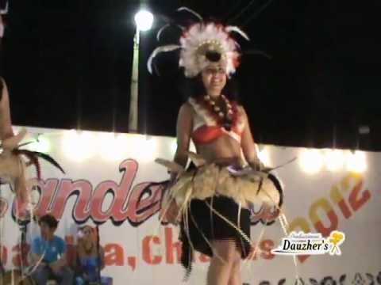

La Fiesta de Nuestra Señora de la Candelaria o Fiesta en Honor a la Virgen de la Candelaria, es una fiesta popular celebrada por los cristianos, en honor de la Virgen de la Candelaria, advocación mariana aparecida en Tenerife (Islas Canarias), al suroeste de España, a principios del siglo XV. Tiene lugar el 2 de febrero.
El Día de la Candelaria es la fiesta de la Purificación. Las Velas Bendecidas ese día son conservadas para auxiliar a los moribundos y alejar las tentaciones del mal. Estas velas son símbolo de luz y purificación. En Coapilla, la festejan con música y danzas tradicionales. Con una participación mayoritariamente femenina. Esta festividad se realiza con alegría ya que es una fiesta de tradiciones y costumbres en el cual habrá muchas actividades como son religiosas, deportivas, culturales y sociales para todos los gustos.
Parque Central, Coapilla.
Parque Central, Coapilla.
Religiosas, deportivas, culturales, eventos musicales, ballet folklórico y vendimias.

posicione el mouse sobre las imágenes